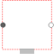

PartialElementaryTwoFlangesAndSupportObsolete partial model. Use PartialElementaryTwoFlangesAndSupport2. |

|
Diagram
{kind=link}
Information
This information is part of the Modelica Standard Library maintained by the Modelica Association.
This is a 1-dim. rotational component with two flanges and a support/housing. It is used to build up elementary components of a drive train with equations in the text layer.
If useSupport=true, the support connector is conditionally enabled
and needs to be connected.
If useSupport=false, the support connector is conditionally disabled
and instead the component is internally fixed to ground.
Parameters (1)
| useSupport |
Value: false Type: Boolean Description: = true, if support flange enabled, otherwise implicitly grounded |
|---|
Connectors (3)
Components (2)
| internalSupport |
Type: InternalSupport Description: Internal support/housing of component as a model with connector flange (flange is either connected to support, if useSupport=true, or connected to fixed, if useSupport=false) |
|
|---|---|---|
| fixed |
Type: Fixed Description: Fixed support/housing, if not useSupport |